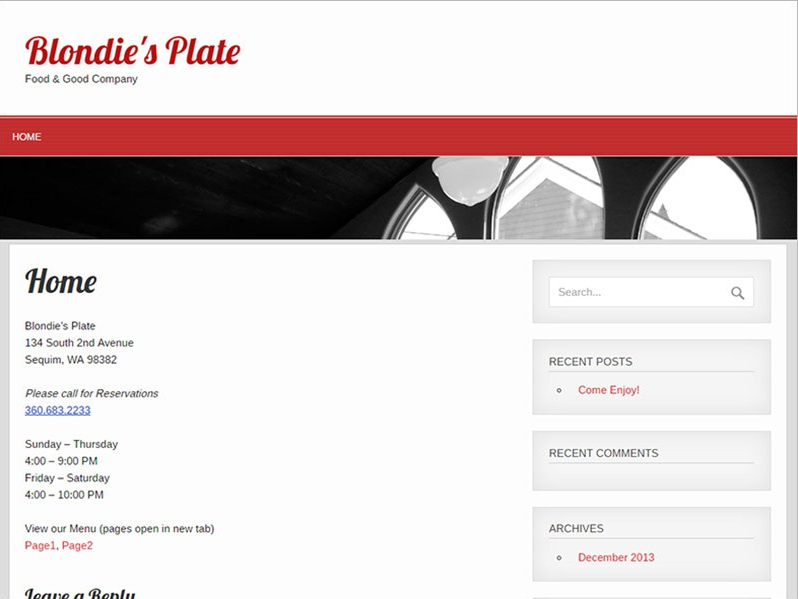
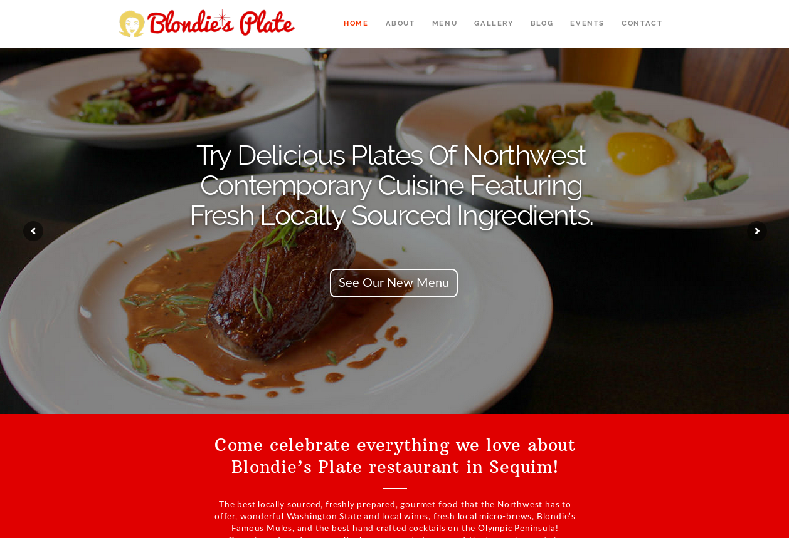
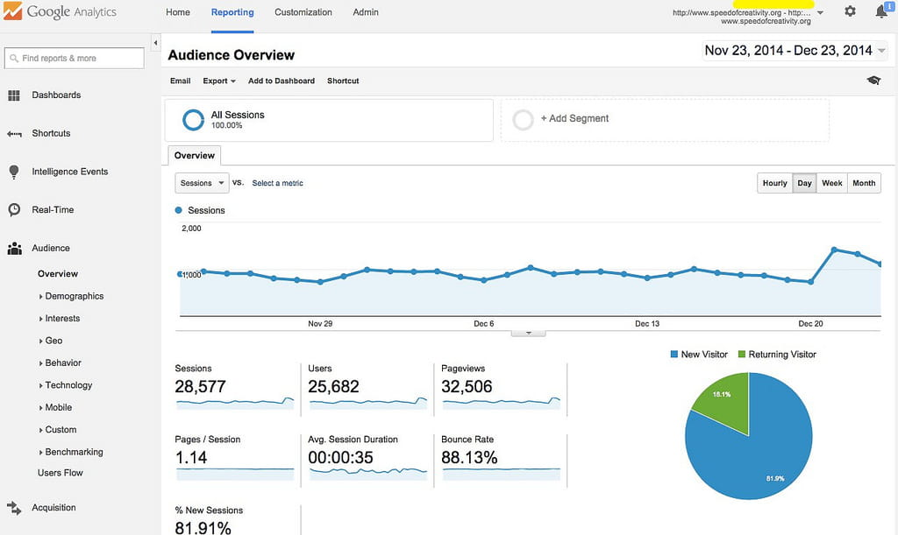
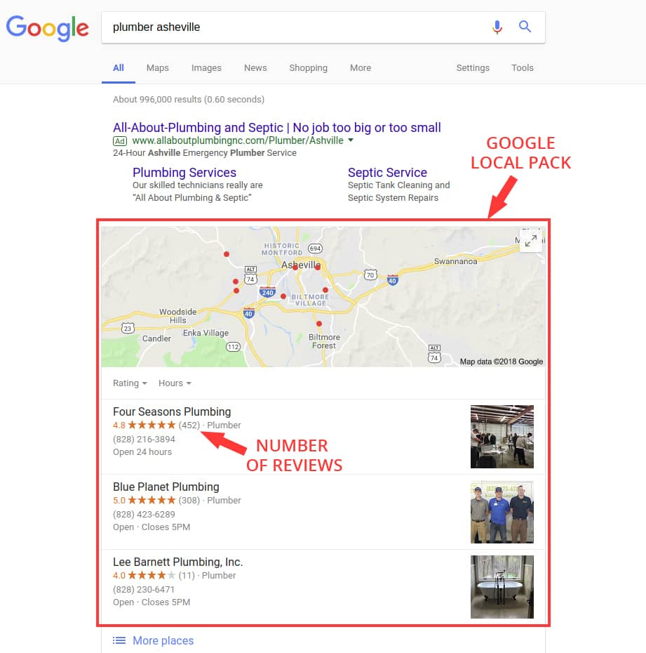

6 Things to Check on Your Website
How to Keep Your Website Up to Date And Working Properly
Hello, My name is Josef. I'm a freelance web designer from Asheville, North Carolina. In this guide I'm gonna show you six most common problems I see very often on small business websites.
You can use this guide to fix those issues by yourself or you can hire someone to do it for you. If you decide to contact me I'll be happy to fix your website so you can start getting more customers for your business.
1. Is Your Website Up to Date And Good Looking?
When people visit your website, they see it as a reflection of your organization. If your site looks professional and is loaded with useful information readers will see you as an authority and expert.
On the other hand old looking out dated website makes a bad impression and discourage your customers from doing business with you. People might think you just don't care.
Make sure information on your website is fresh and up to date. Do you need to add, remove or change text, images, prices, open hours on your website? Or do you need to add new pages or remove the old ones?
Imagine that you just moved to a different city and want to go out for a lunch. You go to Google and search for restaurants. Which website looks more appealing to you? Would you choose this one?

Or would you rather choose this one?

The first picture is the old website before redesign and the second picture is the new updated website.
2. Does Your Website Show Correctly on Smartphones And Tablets?
More than 50% of all internet users use their smartphone as their primary device for viewing websites. Having a mobile optimized website (responsive design) is a necessity for every business today.
How Mobile Optimized Websites Work?
The layout of the website adapts to the size of the screen of the device the visitor is using. On laptop or desktop computer the website will stretch its layout to cover the wide screen. When accessing from a smartphone or tablet the website will adapt to the smaller size screen but still show all the website elements correctly.
How do you know if your website is mobile optimized?
Simply visit your website on laptop, tablet and smartphone and see if your website displays correctly on all those devices. Mobile optimized website will adapt to all different sizes of the screen without any broken elements or menus.
3. Does Your Website Load Fast Enough?
Studies show that if a website takes more than 2 seconds to load 80% of the visitors leave before its loading is done.
Don't leave money on the table by turning off your visitors by a website which loads forever.
The most common reasons for slow loading time are using too many plugins, broken plugins (WordPress website) and using too large images.
4. Does Your WordPress Website Need Maintenance?
WordPress website is very complex Content Management System (CMS). If you add another plugins and extensions on top of that your website might significantly slow down.
Go trough the list of the plugins on your website and keep only those which are necessary and uninstall the rest.
The WordPress website core and the plugins get regular updates.
Sometimes the version of your WordPress website and the versions of the plugins are not compatible or the authors of the plugins might stop releasing new updates.
When the plugins get outdated they might interfere between each other or slow down the whole website.
Usually the solution is to update the old outdated plugins or to replace them with new ones.
5. Do You Track The Visitors on Your Website?
Is your website not bringing you any clients or sales?
Usually when business owners complain about getting no clients or from their website the reason is simple: they have no visitors on their website.
Tracking software allows you to see how many people come to your website every day and much more. It helps you to see how much time they spend on your website, which pages are the most popular ones, how your visitors get to your website and other data.
The most popular website tracking software is Google Analytics. It has a ton of features and data about your website. You can get a great insight into the minds of your visitors.
And what's the best part?
It's completely free!
You just simply sign up from your Google account, connect your website and Google Analytic starts to collect the data and statistics.

Here is another great tracking software. It's called HotJar (hotjar.com).
Although it's not a free software like Google Analytics HotJar offers free demo version with basic tracking features.
I was really excited when I first tried it. HotJar records every single visitor coming to your website and you can play a video of what exactly they're doing. How cool is that?
I definitelly recommend to try that out. Setting it up is pretty simple.
7. Do You Have a Google My Business Account?
Do you want to get visitors to your website for free?
I'm sure your answer is yes.
Here's how you can get Google My Business account and get free visitors from Google:
First sign up for a Google My Business (GMB) account, upload pictures, enter all the information and verify your address. Google will send you a postcard to prove that it's your address.
The second step is to get reviews from your clients and customers. This takes some time and effort but it's totally worth it!
Why do you need the reviews?
Because Google uses the number of the reviews for determining the order of the businesses in the list.
When you get enough online reviews you'll get to the Google local pack.

Imagine how many customers you get if your business is in one of the top three positions.
I know what you're thinking - getting 452 reviews like the first business at the picture takes a LOT of time.
I agree but please don't get discouraged.
Maybe you're in business where the competition is not so strong as plumbers in Asheville. And even when you're not in of the top tree positions you still get a decent traffic fom Google.
So I think it's totally worth it.
How do you get the reviews?
There are two ways. You can ask your customers just to simply Google your business and then click on your GMB account and add the review.
Or you can create a direct link for creating the review and email it to your customers.
Do You Have Any Qustions?
You made it trought the whole guide! Congratulation!
I hope these tips helped you to improve your website and get more customers for your business.
Do you need help with your website? Or do you have any questions? Please don't hesitate to contact me.